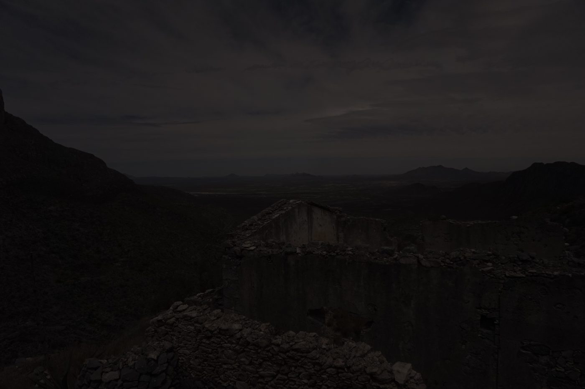

Immersive installation
Exist
The eclipse in the body and in time.

The work
A few minutes of night in the middle of the day
A single room passes through the phases of a total eclipse. The light dims, the air cools, the sound changes and, in totality, the stars come out and the corona lights up.
Ohr's voice accompanies the visit. On the way out, each visitor leaves a word in the archive.
- Format
- Travelling installation
- Media
- Light, spatial sound, temperature, vibration, voice and virtual reality
- Audiences
- All ages
- Status
- In development · phase 1: scale model of the room
Two scales
What the body feels, what time did
6 min 23 s
How long totality will last on 2 August 2027 at the point of greatest eclipse.
Minutes. The light changes quality, the air cools by a few degrees, the horizon glows all the way around and the day mistakes itself.
400
times wider than the Moon: that is the Sun. And about 400 times farther away. From here, they look the same size.
Deep time. The Moon drifts a few centimetres farther away each year. In a few hundred million years it will no longer cover the Sun: we happen to live inside that window.
Sources in Path.
The route
Three moments
Threshold
The light begins to change. Ohr's voice introduces the room.
Totality
Darkness, stars and corona. Vibration and sound for those who cannot see.
Return
A word on the wall. A postcard to take away.
Access
Totality doesn’t reach everywhere. Exist travels.
A total eclipse falls within a narrow band and lasts a few minutes: most people have never been inside one. Exist travels to museums, festivals, schools and squares, and is designed to be walked through with any body.
- See
- Light and corona in large format, with high contrast.
- Hear
- Spatial sound and Ohr's voice, with subtitles.
- Touch
- The phases of the eclipse in relief.
- Feel
- The air cooling and the vibration of totality.
Origin
Born in Ojuela
The place
Ojuela is a mine opened at the end of the 16th century in the Sierra de Mapimí, Durango. In 1777 it was the most prosperous in the area. From 1891 the Peñoles company modernised it with electricity and a rack railway, and there came to be more than three hundred houses for the people who worked underground. The ore crossed the canyon on a suspension bridge and went down by train to Mapimí, where it was smelted.
When the mining stopped, the people moved away. What remained were the walls, the arches and the bridge: a ghost town over an immense landscape. The Ojuela mine is part of the Camino Real de Tierra Adentro, inscribed on the UNESCO World Heritage List in 2010.
That day
The forecast was bad: there were clouds over much of that part of Durango. Many people stayed below, by the bridge. We climbed to a summit where no one else was. From there you could see the sierras, the towns far away, and a building of which only the walls remain, perhaps a temple. Its roof, now, is the sky.
When the Moon covered the Sun, the horizon became a sunset all the way around. Far off, a city switched on its lights: the street lamps thought it was night. Flocks of birds passed. From below rose the shouts of the crowd, mixing with ours. Between the clouds, the corona. It lasted 4 minutes and 26 seconds.
Loading the album…
Photos: César Simón López-Monsalvo, Alberto Rubio Ponce and Gabriela Isabel Vera Garfias · LFAE expedition, 8 April 2024, Puente de Ojuela, Durango. History: INAH, Mina de Ojuela; El Siglo de Durango, Infraestructura de la Compañía Minera Peñoles, 1897–1904 (Spanish-language article); UNESCO, Camino Real de Tierra Adentro.
Documentary
Those who were there
Interviews with people who lived through a total eclipse, with Ohr's voice as a thread. It takes the archive to festivals and screens.
Teaser in development
Workshops and telescope observation are in Sense.